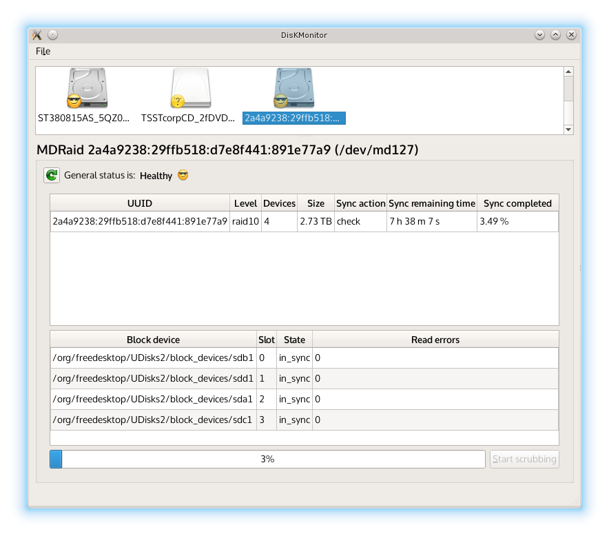
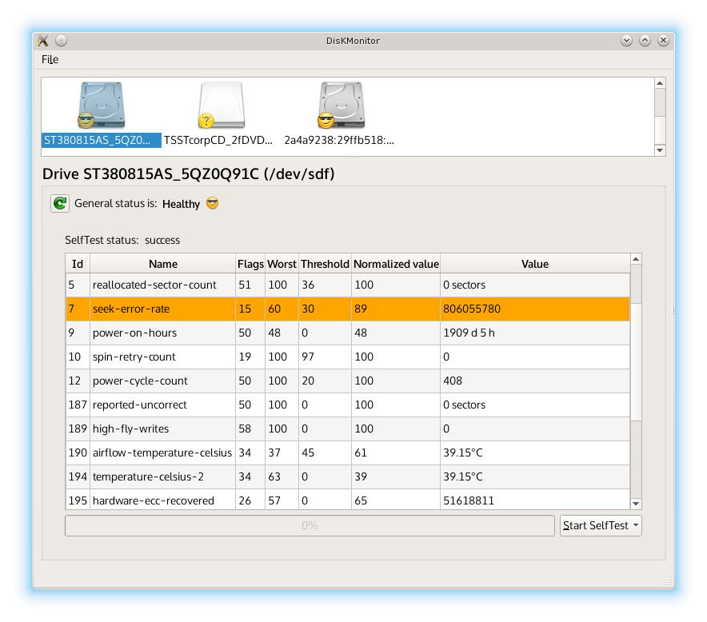
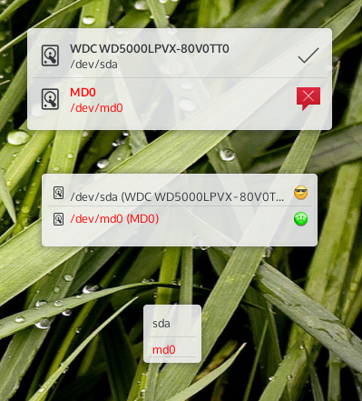
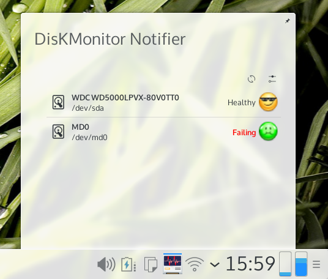

DisKMonitor
KDE tools to monitor SMART devices and MDRaid health status
Requirements
- KF5
- UDisks2 >= 2.1
Build
mkdir build && cd build
cmake ..
make
Screenshots
DisKMonitor displaying MDRaid properties
DisKMonitor displaying SMART properties
DisKMonitor applet on the desktop
DisKMonitor applet on the tray
